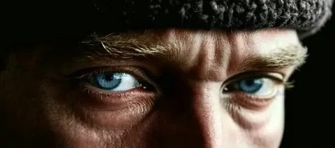
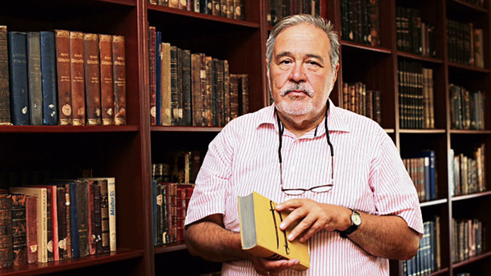
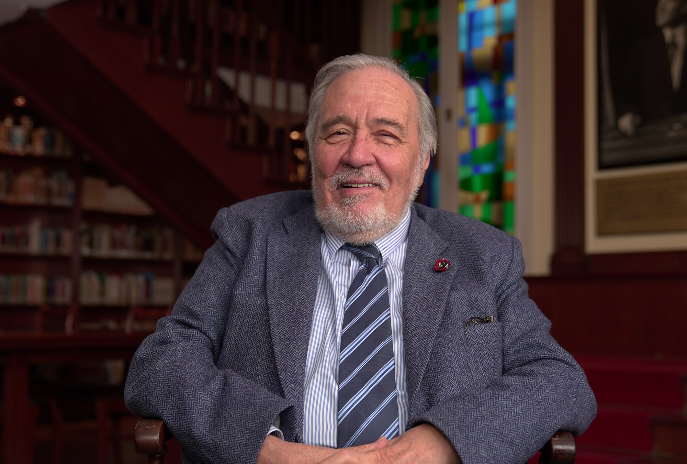
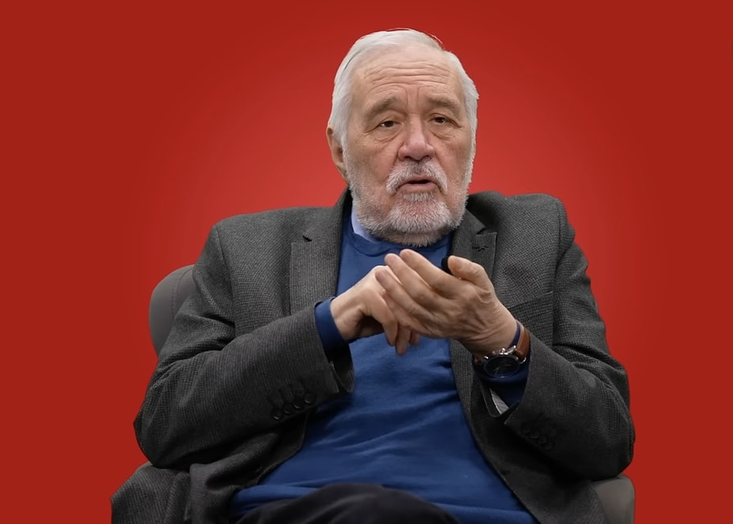
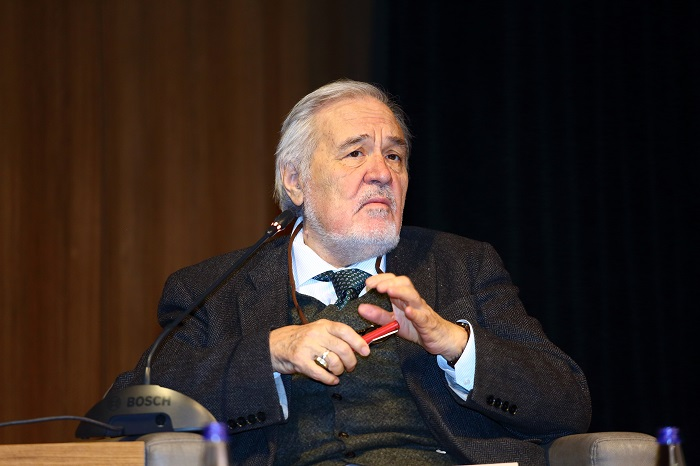

İlber Ortaylı, Türkiye’nin en tanınmış tarihçilerinden biridir. Özellikle Osmanlı tarihi ve diplomasi tarihi üzerine çalışmalarıyla bilinir. Kısaca hayatı: 1947’de Avusturya’nın Bregenz şehrinde doğdu. Ailesi Kırım Tatarıdır. Çocukluğu Türkiye’de geçti. Eğitim hayatını Ankara ve İstanbul’da sürdürdü. Akademik kariyeri: Ankara Üniversitesi Siyasal Bilgiler Fakültesi’nden mezun oldu. Daha sonra Chicago Üniversitesi ve Viyana Üniversitesi gibi önemli kurumlarda eğitim aldı. Uzun yıllar Galatasaray Üniversitesi ve İstanbul Üniversitesi’nde ders verdi. Ayrıca bir dönem Topkapı Sarayı Müzesi müdürlüğü yaptı. Kitapları (bazıları): İmparatorluğun En Uzun Yüzyılı Osmanlı’yı Yeniden Keşfetmek Türklerin Tarihi Cumhuriyet’in Kuruluşu Gazi Mustafa Kemal Atatürk. Bildiği diller: İlber Ortaylı birçok dil bilir ve bu yönüyle de dikkat çeker: "Türkçe (ana dili) Rusça Almanca İngilizce Fransızca İtalyanca Latince (akademik düzeyde)" Kısa ama net söylemek gerekirse: İlber Ortaylı, hem akademik derinliği hem de geniş dil bilgisi sayesinde Türkiye’de tarih alanında en etkili isimlerden biri olarak kabul edilir.
Onun tarih anlatımı sadece savaşlardan ibaret değildir; bir milletin ruhunu, sanatını ve dilini de kapsar.


